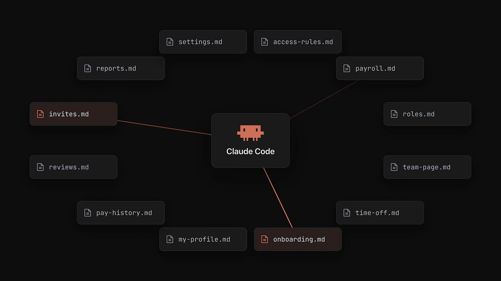
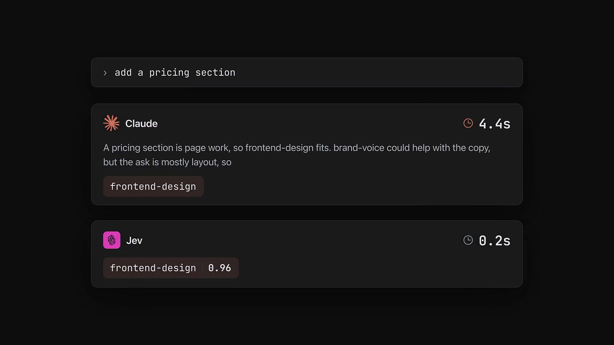
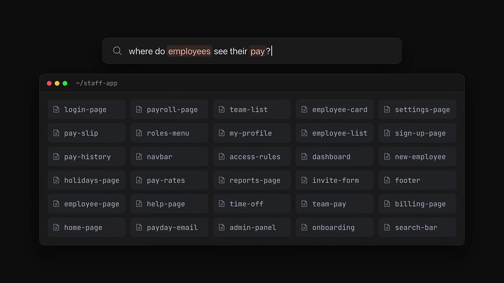
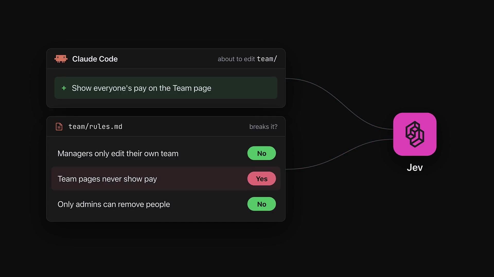

Executive summary
Seven places to separate judgment from generation
AI LABS connected TypeSafe’s Jev decision model to a Claude Code workflow and presents seven uses: selective context compaction, checking whether documented requirements have tests, routing a prompt to the right skill, ranking repository files, triaging how deeply a change needs review, choosing the next browser action, and blocking edits that appear to violate file-specific rules.
Jev does not write code or prose in these examples. It receives a state plus bounded questions, then returns choices, scores, or yes/no probabilities. Claude remains the generator and final reasoner. Hooks and skills move the repeated selection work into a cheaper decision path.
- The strongest patterns are retrieval and routing. Skill selection and lexical-search-plus-ranking have a clear, finite candidate set and an easy fallback.
- The riskiest patterns are deletion and blocking. Context compaction can discard unrecoverable evidence; a rule gate can block valid work or allow a dangerous edit.
- A hook is more reliable than a reminder. The model may ignore a prompt instruction, while an external hook is invoked by the runtime. The hook’s judgment can still be wrong.
- The demonstrations are not benchmarks. The reported sub-second compaction and 1.6-second file ranking are single workflow observations without accuracy or tail-latency distributions.
- The production artifact is an eval-backed policy. Every decision needs labeled examples, thresholds, a fallback, a trace, and an owner.
The seven use cases come from the video and its description. Provider availability and API shape were cross-checked against Vercel and TypeSafe documentation. The implementation-specific speed and quality claims remain creator-reported demonstrations, not independently reproduced results.
The model contract
Jev chooses; the coding agent produces
A generative model emits text token by token. Jev instead evaluates one state against one or more typed questions and returns bounded values with probabilities. The video describes three practical shapes: pick one option, answer a probabilistic yes/no question, or assign a score. Multiple questions over the same state can be evaluated together.
Code
Exact rules, schemas, permissions, side effects, and control flow.
Decision model
Classification, ranking, scoring, and confidence-gated routing.
Generative model
Planning, synthesis, code generation, explanations, and exceptions.
This division matters more than model branding. A bounded semantic decision can be independently evaluated; a prose instruction buried inside a long agent prompt is much harder to observe. Jev is currently available through gateways including Vercel AI Gateway and OpenRouter, but gateway access does not remove the need to protect API keys or review what project state leaves the machine.
Pattern one
Selective compaction: preserve messages, prune tool history
Normal compaction asks a language model to summarize an old
conversation. The video’s alternative uses the open-source
fast-jev-compaction plugin to score which tool calls
and results remain useful. User and assistant text stays verbatim;
stale tool pairs can be retained, head-truncated, or removed. AI
LABS adapted the plugin for Vercel AI Gateway and reports that
compaction in its session completed in under a second.
The repository confirms this architecture and includes fallback behavior when the API fails, the response is malformed, the state cannot fit, or reduction is too small. It also labels the Claude Code function-hook interface as early access. One detail differs from the narration: the upstream documented default requests compaction at 60 percent context use, while the video describes a custom threshold behavior. Treat thresholds as deployment configuration, not a property of Jev.
Open repository issues document serious replay failures: one long-session test dropped every non-pinned call under the default wording, and another lost a historical calculation that could no longer be reproduced. These reports are exploratory, but they expose the right failure class. Relevance is not recoverability. Immutable source data and non-reproducible outputs need deterministic protection before any probabilistic pruning.
Pattern two
Requirements coverage: find rules with no tests
AI LABS attaches a hook to edits involving access-control files. The hook compares documented rules with the test suite and asks whether each rule has a corresponding test. Claude can then write tests for the gaps identified by the report.

This is a good discovery tool but a weak final judge. A semantic match between a rule and a test name does not prove that the test exercises the right behavior, uses meaningful assertions, or covers denial paths. A stronger design stores stable requirement IDs in the specification and test metadata, uses deterministic checks for explicit links, and asks the model only to investigate genuinely ambiguous mappings.
Pattern three
Skill picker: route before loading instructions
Claude Code normally sees the names and descriptions of available skills and decides which one to load. The demonstrated hook reads those same descriptions plus the user prompt, then asks Jev to select one skill or none. Claude receives the selected skill rather than reasoning over the full registry itself.

This is a classic intent router and one of the cleanest use cases. Its main risk is a closed-world assumption. Real requests can need several skills, no known skill, or a new combination. A production picker should support top-k or multi-label output, an explicit “none/unknown” route, a confidence gate, and a fallback that lets the agent search beyond the first choice.
Pattern four
File search: lexical recall, semantic ranking, selective reading
Instead of launching a full Explore subagent with the same model as the main coding session, the workflow first runs a cheap keyword search. Jev then scores candidate files in batches of twenty and Claude opens only the highest-ranked few. In the shown example, 35 files were ranked in 1.6 seconds and the expected file appeared first.

This is a two-stage retrieval system, structurally similar to RAG. It should be compared against repository search, embeddings, a cross-encoder, and a small search agent on a labeled set of real tasks. Measure Recall@k first: a fast ranker is useless when the lexical stage never retrieves the correct file. Also evaluate monorepos, generated files, duplicated names, multilingual code, and questions whose answer spans several modules.
Pattern five
Review triage: spend deep review where risk is plausible
Jev does not replace the reviewer. It performs a first pass over the change and answers seven yes/no questions, such as whether the change is allowed by project rules or whether the target should be modified at all. If every answer is negative, the reviewer performs one quick round. A positive or uncertain answer triggers the full review path.
Low-risk route
All screening questions confidently negative → focused review still runs once.
Escalated route
Any risk signal or uncertainty → complete independent review with the stronger model.
The economics work only if the screen has very high recall. A false positive costs extra review time; a false negative can ship a bug. Questions therefore need to correspond to observable risk dimensions, and the escalation threshold should reflect the cost of missing each one. Always-on deterministic checks, tests, linters, and ownership rules remain outside this probabilistic shortcut.
Pattern six
Browser navigation: choose from the visible action space
The browser-testing skill enumerates buttons and links on the current page, asks Jev which action moves closer to the goal, executes it, then repeats with the next page. AI LABS used the loop to sign in as an administrator, manager, and employee and navigate to pages each role should be allowed to reach. Claude then compares the observed paths with the documented permissions.
Choosing among visible elements is naturally bounded, but browser testing is not only navigation. The harness still needs exact assertions, stable account fixtures, state reset, loop detection, action budgets, and screenshots or DOM evidence. “The decision model reached the page” does not prove that unauthorized routes are inaccessible or that the displayed data is correct.
Pattern seven
Rule enforcement: move policy out of the prompt
Prompt files such as CLAUDE.md are instructions; the
model can overlook them. AI LABS instead uses a hook that runs
before each edit, loads the rules associated with that file, and
asks whether the proposed change violates each rule. A violation
at or above 80 percent confidence blocks the edit and returns the
relevant rule to Claude for correction.

This pattern is valuable when the rule is semantic, but it should not replace enforceable architecture. Database row-level security, authorization middleware, schemas, dependency boundaries, and CI checks should encode hard constraints. For a destructive or security-sensitive change, “below 80 percent” cannot mean “safe.” It should mean “not confidently classified,” followed by another check or human review.
Production assessment
Not all seven patterns deserve the same trust
| Pattern | Primary value | Dominant failure | Recommended role |
|---|---|---|---|
| Compaction | Latency and context reduction | Irrecoverable evidence deletion | Shadow mode, archive first |
| Docs checker | Coverage discovery | Superficial rule-to-test match | Advisory report |
| Skill picker | Lower routing cost | Wrong or incomplete route | Confidence-gated top-k |
| File ranking | Fewer expensive reads | Correct file absent from candidates | Re-ranker with fallback |
| Review triage | Focus expensive review | False-negative risk screen | Never skip baseline checks |
| Browser navigation | Fast next-action choice | Navigation mistaken for verification | Planner under assertion harness |
| Rule gate | Runtime-enforced policy check | Probabilistic allow/block error | Signal beside hard controls |
The overall design is strongest when Jev narrows a reversible search space and weakest when its output destroys information or authorizes a side effect. Start with ranking and recommendation; prove accuracy on replay data; then consider gates only after the fallback and enforcement boundaries are explicit.
Platform translation
How to expose these patterns to BA-side builders
For a business analyst assembling agents, “add Jev” is too technical and too unconstrained. Expose a decision step with a small contract: the business question, candidate outcomes, relevant state fields, examples and exclusions, consequence level, confidence policy, fallback owner, and evaluation set. The platform can then compile that contract into the chosen provider.
Keep cognitive skills, actionable skills, and enforcement separate. A cognitive skill can rank or recommend. An actionable skill invokes tools under declared permissions. An enforcement policy lives in the harness and cannot be bypassed by either agent. The video’s seven examples become reusable patterns only after those ownership boundaries are visible in the builder UI.
Video guide
Jump to each demonstration
Sources and method
What was verified
- AI LABS, “Insane Jev Use Cases You Need To Use Right Now”, published September 28, 2026. Auto-generated English transcript and source frames were used.
- Fast Jev Compaction repository, including hook architecture, fallback behavior, defaults, and early-access caveat.
- Long-session replay issue #52 and non-reproducible result issue #25, treated as exploratory failure reports rather than general performance evidence.
- TypeSafe’s System One design guidance for atomic questions, relevant state, code-owned control flow, and confidence routing.
- Vercel AI Gateway’s Jev model page for current gateway availability and typed evaluation interface.
Further Jev reading
-
Building a Harness with Jev
explains the core agent loop, typed question contract,
TypeSafeClassifier, model routing, and risky-tool middleware. - Jev-as-a-Judge for Agent Evals documents LangChain's small evaluator experiment, including its fixed dataset, repeated judgments, cost, latency, variance, and reproducibility limits.
- Jev in LangSmith Evals shows how typed Jev questions become production feedback keys that teams can chart, filter, alert on, and attach to online traces.
Claims about the AI LABS implementation are attributed to the video. External sources were used to verify public interfaces and identify known risks, not to imply that the seven private workflow implementations were independently reproduced.